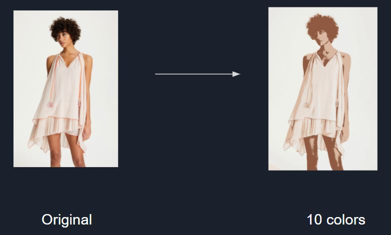
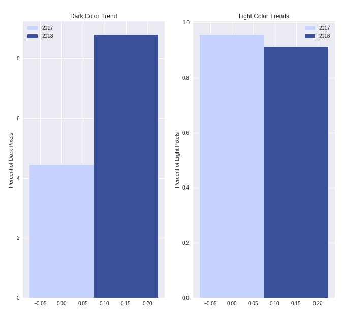

In order to get myself familiar with image analyses, I decided to challenge myself with this project. In this project, colors from images downloaded from a retailer's website were analyzed and compared to derive the color trends. This is the first time I use machine learning to work with images so there were a lot to learn. The goal of this project is to study the color trend changes from 2017 to 2018 in the Lemlem Resort fashion collections from Vogue.
Since the images from the website were not easy to download, I wrote a code snippet to scrape the images from their pages. The data collected included:
To put things in perspective, the Red-Green-Blue digital color system has 256x256x256 = 16,777,216 different colors. In order to analyze efficiently, I had to reduce the amount of colors, or group the colors into families. I used these two different approaches to compare the results.
In this approach, the number of colors in each images were reduced down to a handful of colors. Images were converted by translating pixels through the ADAPTIVE palette. The alpha column was added in order to apply this method. The number of colors were reduced down to 10.

To build the dataset for this approach, images were converted to a uniform size of 1333 x 2000 pixels. This is the medium among all the sizes the website provided, so I decided to go with it. There are four columns in the dataset: pixel count, R, G, B, Alpha. The number of rows is the number of colors (10 in our case) multiply by the number of images (20 and 24 for 2017 and 2018 collections respectively). The data was sorted so that the most occurred colors are moved to the top.
Then, I created the color palettes to show the most common colors in each collections.
We can see the important colors in the 2017 collection such as light blue and beige were extracted from the images. Since the background, skin and hair colors occur a lot, we expect that there are lots of similar shades between our clothing's colors. Similarly, we can see the emergence of dark blue in the 2018 collection while light blue is still present in the palette.
Some of the advantages of this approach:
Nevertheless, this method leaves a lot to be desired. For instance:
Next, I targeted to solve the problems from the previous approach. Since there are lots of similar shades from the background and the clothings, I decided to group similar colors so that we can see separate color families more clearly. K-Means is a good approach since we can specify the number of clusters to experiment with.
To build the new dataset, I also used the resized images from the previous method. But this time, I eliminated the "pixel count" column since we do not care about the size of the clusters. Also we did not need the alpha channel, so it was eliminated. The number of rows is the sum of number of distinct colors in each image
To fit our K-Means model, I decided to use eight clusters. This number was good enough to group up different colors for backgrounds, skin, hair and a few different colors on the clothings. Eight different centers for eight clusters were found to minimize the total distances of all points to their centers.
We can see that the colors were grouped up well. We no longer have to go through many similar colors of the background to spot an important color in the fashion. Light blue (and even darker blue) from the 2017 collection were grouped into clusters. Dark blue and light blue from the 2018 collection were also clustered well. Some of the advantages of this method include:
But there are also some limitations with this method:
From the Red-Green-Blue palette, we define light and dark pixels as follows:

Next, we calculated the percentage of light pixels and dark pixels from each of the two collections to compare them side-by-side. The results below show that from 2017 to 2018, dark pixels go from 4.5% to 8.8%, whereas light pixels go from 99.5% to 91.2%. The pixels include all colors from images, but if we assume that the unimportant colors (background, skin tone, hair, etc.) are in similar proportion, then we can safely conclude that the 2018 Lemlem fashion is getting darker.
The results from two different approaches show that in 2017, the Lelem fashion had lots of light blue and pink accent color. But this trend became darker in 2018. The pink accent color was eliminated and darker blue stated to emerge. For fashion retailers who want to keep up to the current trends, we recommend to manufacture more blue clothings and ignore pink accent color for optimum profit.